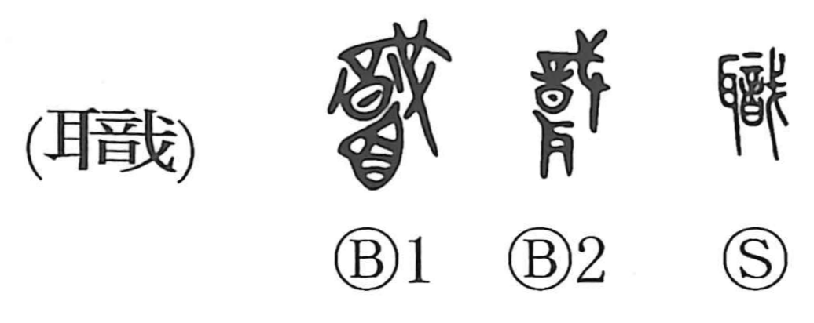

職

Kun: | On: shoku
post ・ office ・ duty ・ occupation ・ work
Explanation
職 is a phono-semantic character. Its right-hand element 戠 (shoku) provides the sound and originally depicted a decorative token tied to a pike—bright cloth used as a sign. In bronze-script forms this marker sometimes appears attached to a head, but in 職 it is joined to an ear. On ancient battlefields, the severed left ears of fallen enemies were collected as proof of military merit, and this graph shows silk being affixed to such an ear as a mark. From the idea of attaching a distinguishing sign and administering military merits, the character came to mean taking charge and managing affairs, and by extension a post or office, one’s duty, and work.